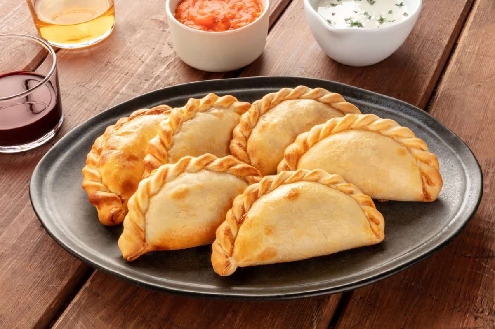

Empanadas

Description
A baked or fried pastry stuffed with any of a variety of fillings,
such as meat, cheese, vegetables, fruits, and other ingredients.
Ingredients
Dough for empanadas. (Makes about 20 or 30)
- 3 cups flour
- 1 egg yolk
- ½ cup of grasa - lard or butter or mix of both
- ¾ to 1 cup of warm milk
- ½ tsp salt
Beef filling
- 1 lb ground beef
- 2 white onions
- 1/2 cup lard or butter
- 2 tbs smoked paprika
- 3 hard boiled eggs
- Salt and pepper to taste
Steps
Empanada dough
- Mix the flour and salt in a food processor, pulse until well combined.
- Add the lard or butter, blend well.
- Add the egg yolk and the milk in small amounts, pulse until small dough clumps start to form.
- Make a couple of balls, flatten into disks and chill in the refrigerator for about 30 minutes.
- On a lightly floured surface roll out the dough into a thin sheet and cut out
round disc shapes for empanadas (use round molds or a small plate).
- Use the empanada discs immediately or store in the refrigerator or
freezer until ready to use.
Beef picadillo filling and empanada assembly
- Combine the ground beef, paprika, red pepper, cumin, salt and pepper in a large bowl,
mix all the ingredients together and chill until ready to use.
- Melt the lard in a large frying pan or sauté pan, add the onions and salt,
cook until the onions are soft, about 8 minutes.
- Add the meat mixture to the onions and cook on medium heat until
the meat is done, stir frequently.
- To assemble the empanadas add a spoonful of the meat mixture on the center of
each empanada disc, add a slice of egg and sliced olive.
- Fold the empanada discs and seal the edges gently with your fingers, twist and fold the
edges of the empanadas with your fingers, as a final step use a fork to press
down and finish sealing the empanadas.
- Pre-heat the oven to 400 F and bake for about 20-25 minutes, until golden on top.
That is! Now you can enjoy the delicious Argentine empanadas.